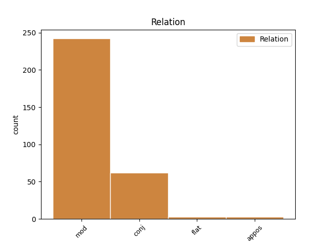
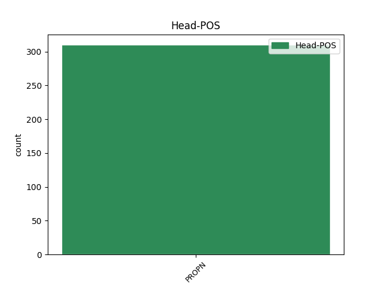
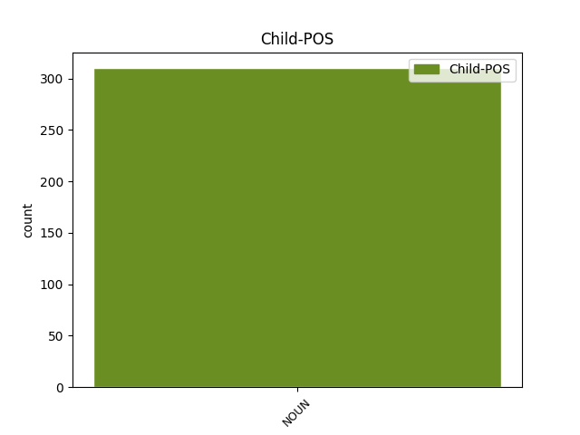

Distribution of features within this leaf



Agreement Rules sorted by frequency.
- When the dependent token is the modifer(mod) of the head token, and the head token is PROPN and the dependent token is NOUN.
1 Андреас андреас PROPN Npmsi Definite=Ind|Gender=Masc|Number=Sing 0 _ _ _
2 Олдаг _ _ _ _ 0 _ _ _
3 , _ _ _ _ 0 _ _ _
4 в. в. NOUN Ncmsi Definite=Ind|Gender=Masc|Number=Sing 1 mod _ _
5 " _ _ _ _ 0 _ _ _
6 Зюддойче _ _ _ _ 0 _ _ _
7 цайтунг _ _ _ _ 0 _ _ _
8 " _ _ _ _ 0 _ _ _
1 Нито _ _ _ _ 0 _ _ _
2 Еврокомисията еврокомисия PROPN Npfsd Definite=Def|Gender=Fem|Number=Sing 0 _ _ _
3 , _ _ _ _ 0 _ _ _
4 нито _ _ _ _ 0 _ _ _
5 отделните _ _ _ _ 0 _ _ _
6 страни страна NOUN Ncfpi Definite=Ind|Gender=Fem|Number=Plur 2 conj _ _
7 членки _ _ _ _ 0 _ _ _
8 разполагат _ _ _ _ 0 _ _ _
9 с _ _ _ _ 0 _ _ _
10 надеждни _ _ _ _ 0 _ _ _
11 прогнозни _ _ _ _ 0 _ _ _
12 данни _ _ _ _ 0 _ _ _
13 за _ _ _ _ 0 _ _ _
14 разходите _ _ _ _ 0 _ _ _
15 , _ _ _ _ 0 _ _ _
16 свързани _ _ _ _ 0 _ _ _
17 с _ _ _ _ 0 _ _ _
18 разширяването _ _ _ _ 0 _ _ _
19 . _ _ _ _ 0 _ _ _
1 Това _ _ _ _ 0 _ _ _
2 са _ _ _ _ 0 _ _ _
3 " _ _ _ _ 0 _ _ _
4 ЛУКойл _ _ _ _ 0 _ _ _
5 Нефотхим _ _ _ _ 0 _ _ _
6 " _ _ _ _ 0 _ _ _
7 , _ _ _ _ 0 _ _ _
8 " _ _ _ _ 0 _ _ _
9 Солвей _ _ _ _ 0 _ _ _
10 соди _ _ _ _ 0 _ _ _
11 " _ _ _ _ 0 _ _ _
12 , _ _ _ _ 0 _ _ _
13 " _ _ _ _ 0 _ _ _
14 Булгартабак булгартабак PROPN Npmsi Definite=Ind|Gender=Masc|Number=Sing 0 _ _ _
15 холдинг холдинг NOUN Ncmsi Definite=Ind|Gender=Masc|Number=Sing 14 flat _ SpaceAfter=No
16 " _ _ _ _ 0 _ _ _
17 , _ _ _ _ 0 _ _ _
18 " _ _ _ _ 0 _ _ _
19 Благоевград _ _ _ _ 0 _ _ _
20 БТ _ _ _ _ 0 _ _ _
21 " _ _ _ _ 0 _ _ _
22 , _ _ _ _ 0 _ _ _
23 " _ _ _ _ 0 _ _ _
24 Албена _ _ _ _ 0 _ _ _
25 " _ _ _ _ 0 _ _ _
26 , _ _ _ _ 0 _ _ _
27 " _ _ _ _ 0 _ _ _
28 Балканфарма _ _ _ _ 0 _ _ _
29 - _ _ _ _ 0 _ _ _
30 Разград _ _ _ _ 0 _ _ _
31 " _ _ _ _ 0 _ _ _
32 , _ _ _ _ 0 _ _ _
33 " _ _ _ _ 0 _ _ _
34 Софарма _ _ _ _ 0 _ _ _
35 " _ _ _ _ 0 _ _ _
36 , _ _ _ _ 0 _ _ _
37 " _ _ _ _ 0 _ _ _
38 Химко _ _ _ _ 0 _ _ _
39 " _ _ _ _ 0 _ _ _
40 , _ _ _ _ 0 _ _ _
41 " _ _ _ _ 0 _ _ _
42 Златни _ _ _ _ 0 _ _ _
43 пясъци _ _ _ _ 0 _ _ _
44 " _ _ _ _ 0 _ _ _
45 и _ _ _ _ 0 _ _ _
46 " _ _ _ _ 0 _ _ _
47 Петрол _ _ _ _ 0 _ _ _
48 " _ _ _ _ 0 _ _ _
49 . _ _ _ _ 0 _ _ _
1 През _ _ _ _ 0 _ _ _
2 1998 _ _ _ _ 0 _ _ _
3 г. _ _ _ _ 0 _ _ _
4 той _ _ _ _ 0 _ _ _
5 наел _ _ _ _ 0 _ _ _
6 триетажна _ _ _ _ 0 _ _ _
7 сграда _ _ _ _ 0 _ _ _
8 и _ _ _ _ 0 _ _ _
9 дворно _ _ _ _ 0 _ _ _
10 място _ _ _ _ 0 _ _ _
11 на _ _ _ _ 0 _ _ _
12 ул. _ _ _ _ 0 _ _ _
13 " _ _ _ _ 0 _ _ _
14 Вашингтон _ _ _ _ 0 _ _ _
15 " _ _ _ _ 0 _ _ _
16 2 _ _ _ _ 0 _ _ _
17 в _ _ _ _ 0 _ _ _
18 столицата _ _ _ _ 0 _ _ _
19 от _ _ _ _ 0 _ _ _
20 фирма _ _ _ _ 0 _ _ _
21 " _ _ _ _ 0 _ _ _
22 Лондон _ _ _ _ 0 _ _ _
23 козметикс _ _ _ _ 0 _ _ _
24 " _ _ _ _ 0 _ _ _
25 с _ _ _ _ 0 _ _ _
26 управител _ _ _ _ 0 _ _ _
27 Георги георги PROPN Npmsi Definite=Ind|Gender=Masc|Number=Sing 0 _ _ _
28 Аврамов _ _ _ _ 0 _ _ _
29 ( _ _ _ _ 0 _ _ _
30 бивш _ _ _ _ 0 _ _ _
31 шеф шеф NOUN Ncmsi Definite=Ind|Gender=Masc|Number=Sing 27 appos _ _
32 на _ _ _ _ 0 _ _ _
33 " _ _ _ _ 0 _ _ _
34 Лекс _ _ _ _ 0 _ _ _
35 " _ _ _ _ 0 _ _ _
36 ) _ _ _ _ 0 _ _ _
37 . _ _ _ _ 0 _ _ _
Disagree Examples:
1 Излязоха _ _ _ _ 0 _ _ _
2 и _ _ _ _ 0 _ _ _
3 четиримата _ _ _ _ 0 _ _ _
4 - _ _ _ _ 0 _ _ _
5 Балашев _ _ _ _ 0 _ _ _
6 , _ _ _ _ 0 _ _ _
7 Димка димка PROPN Npfsi Definite=Ind|Gender=Fem|Number=Sing 0 _ _ _
8 и _ _ _ _ 0 _ _ _
9 телеграфистът телеграфист NOUN Ncmsf Definite=Def|Gender=Masc|Number=Sing 7 conj _ _
10 със _ _ _ _ 0 _ _ _
11 сестра _ _ _ _ 0 _ _ _
12 си _ _ _ _ 0 _ _ _
13 . _ _ _ _ 0 _ _ _
1 Пред _ _ _ _ 0 _ _ _
2 ученици _ _ _ _ 0 _ _ _
3 и _ _ _ _ 0 _ _ _
4 представители _ _ _ _ 0 _ _ _
5 на _ _ _ _ 0 _ _ _
6 обществеността _ _ _ _ 0 _ _ _
7 воините _ _ _ _ 0 _ _ _
8 от _ _ _ _ 0 _ _ _
9 поделенията _ _ _ _ 0 _ _ _
10 на _ _ _ _ 0 _ _ _
11 Сухопътни _ _ _ _ 0 _ _ _
12 войски _ _ _ _ 0 _ _ _
13 в _ _ _ _ 0 _ _ _
14 Ямбол _ _ _ _ 0 _ _ _
15 , _ _ _ _ 0 _ _ _
16 Стара _ _ _ _ 0 _ _ _
17 Загора _ _ _ _ 0 _ _ _
18 , _ _ _ _ 0 _ _ _
19 Харманли _ _ _ _ 0 _ _ _
20 , _ _ _ _ 0 _ _ _
21 Казанлък _ _ _ _ 0 _ _ _
22 , _ _ _ _ 0 _ _ _
23 Смолян _ _ _ _ 0 _ _ _
24 , _ _ _ _ 0 _ _ _
25 Плевен _ _ _ _ 0 _ _ _
26 , _ _ _ _ 0 _ _ _
27 Пазарджик _ _ _ _ 0 _ _ _
28 , _ _ _ _ 0 _ _ _
29 Сливница _ _ _ _ 0 _ _ _
30 , _ _ _ _ 0 _ _ _
31 Благоевград благоевград PROPN Npmsi Definite=Ind|Gender=Masc|Number=Sing 0 _ _ _
32 , _ _ _ _ 0 _ _ _
33 Горна _ _ _ _ 0 _ _ _
34 Баня баня NOUN Ncfsi Definite=Ind|Gender=Fem|Number=Sing 31 conj _ _
35 и _ _ _ _ 0 _ _ _
36 Самоков _ _ _ _ 0 _ _ _
37 проведоха _ _ _ _ 0 _ _ _
38 показни _ _ _ _ 0 _ _ _
39 занятия _ _ _ _ 0 _ _ _
40 по _ _ _ _ 0 _ _ _
41 физическа _ _ _ _ 0 _ _ _
42 подготовка _ _ _ _ 0 _ _ _
43 и _ _ _ _ 0 _ _ _
44 представиха _ _ _ _ 0 _ _ _
45 въоръжение _ _ _ _ 0 _ _ _
46 и _ _ _ _ 0 _ _ _
47 техника _ _ _ _ 0 _ _ _
48 . _ _ _ _ 0 _ _ _
1 Тя _ _ _ _ 0 _ _ _
2 се _ _ _ _ 0 _ _ _
3 управлява _ _ _ _ 0 _ _ _
4 според _ _ _ _ 0 _ _ _
5 Конституцията конституция PROPN Npfsd Definite=Def|Gender=Fem|Number=Sing 0 _ _ _
6 и _ _ _ _ 0 _ _ _
7 законите закон NOUN Ncmpd Definite=Def|Gender=Masc|Number=Plur 5 conj _ _
8 на _ _ _ _ 0 _ _ _
9 страната _ _ _ _ 0 _ _ _
10 . _ _ _ _ 0 _ _ _
1 Чужденците _ _ _ _ 0 _ _ _
2 , _ _ _ _ 0 _ _ _
3 които _ _ _ _ 0 _ _ _
4 пребивават _ _ _ _ 0 _ _ _
5 в _ _ _ _ 0 _ _ _
6 Република _ _ _ _ 0 _ _ _
7 България _ _ _ _ 0 _ _ _
8 , _ _ _ _ 0 _ _ _
9 имат _ _ _ _ 0 _ _ _
10 всички _ _ _ _ 0 _ _ _
11 права _ _ _ _ 0 _ _ _
12 и _ _ _ _ 0 _ _ _
13 задължения _ _ _ _ 0 _ _ _
14 по _ _ _ _ 0 _ _ _
15 тази _ _ _ _ 0 _ _ _
16 Конституция _ _ _ _ 0 _ _ _
17 с _ _ _ _ 0 _ _ _
18 изключение _ _ _ _ 0 _ _ _
19 на _ _ _ _ 0 _ _ _
20 правата _ _ _ _ 0 _ _ _
21 и _ _ _ _ 0 _ _ _
22 задълженията _ _ _ _ 0 _ _ _
23 , _ _ _ _ 0 _ _ _
24 за _ _ _ _ 0 _ _ _
25 които _ _ _ _ 0 _ _ _
26 Конституцията конституция PROPN Npfsd Definite=Def|Gender=Fem|Number=Sing 0 _ _ _
27 и _ _ _ _ 0 _ _ _
28 законите закон NOUN Ncmpd Definite=Def|Gender=Masc|Number=Plur 26 conj _ _
29 изискват _ _ _ _ 0 _ _ _
30 българско _ _ _ _ 0 _ _ _
31 гражданство _ _ _ _ 0 _ _ _
32 . _ _ _ _ 0 _ _ _
1 Министерският _ _ _ _ 0 _ _ _
2 съвет _ _ _ _ 0 _ _ _
3 ръководи _ _ _ _ 0 _ _ _
4 и _ _ _ _ 0 _ _ _
5 осъществява _ _ _ _ 0 _ _ _
6 вътрешната _ _ _ _ 0 _ _ _
7 и _ _ _ _ 0 _ _ _
8 външната _ _ _ _ 0 _ _ _
9 политика _ _ _ _ 0 _ _ _
10 на _ _ _ _ 0 _ _ _
11 страната _ _ _ _ 0 _ _ _
12 в _ _ _ _ 0 _ _ _
13 съответствие _ _ _ _ 0 _ _ _
14 с _ _ _ _ 0 _ _ _
15 Конституцията конституция PROPN Npfsd Definite=Def|Gender=Fem|Number=Sing 0 _ _ _
16 и _ _ _ _ 0 _ _ _
17 законите закон NOUN Ncmpd Definite=Def|Gender=Masc|Number=Plur 15 conj _ SpaceAfter=No
18 . _ _ _ _ 0 _ _ _